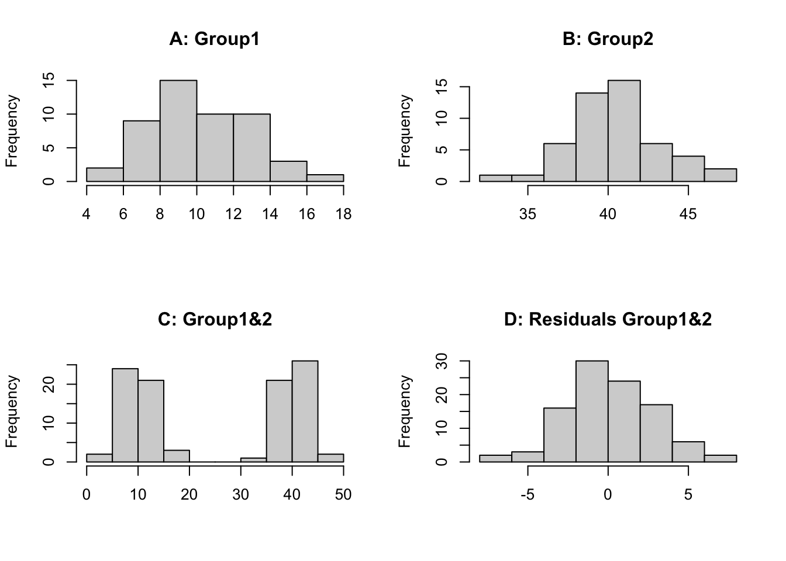
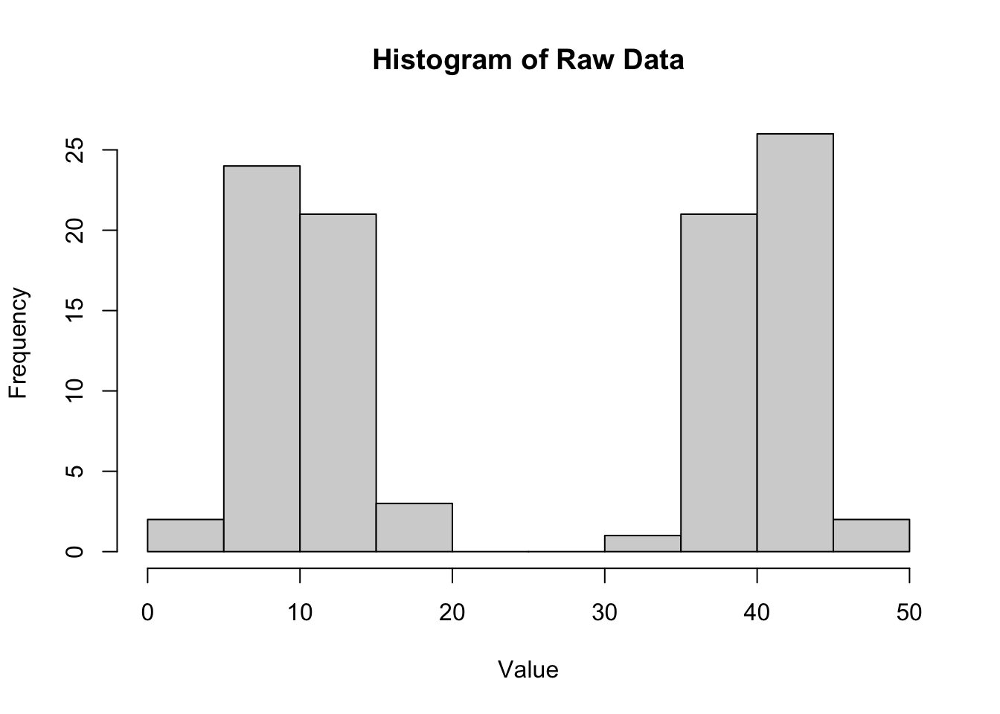
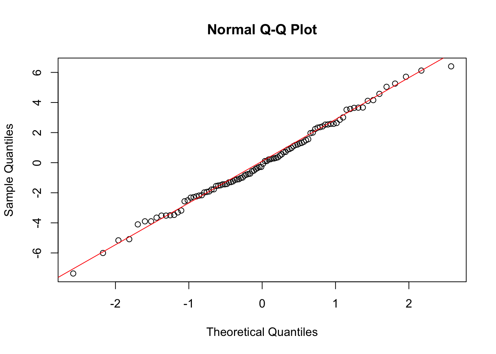
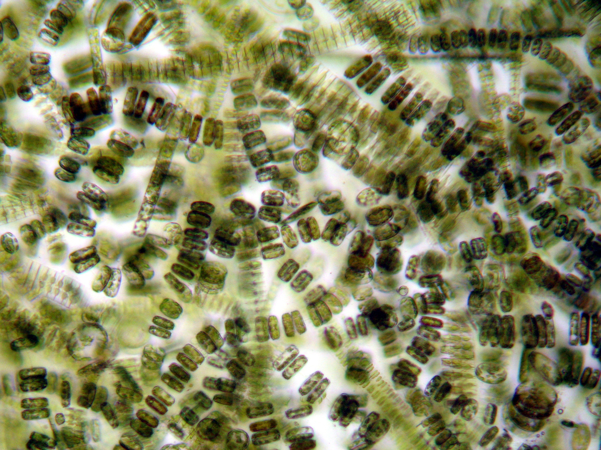
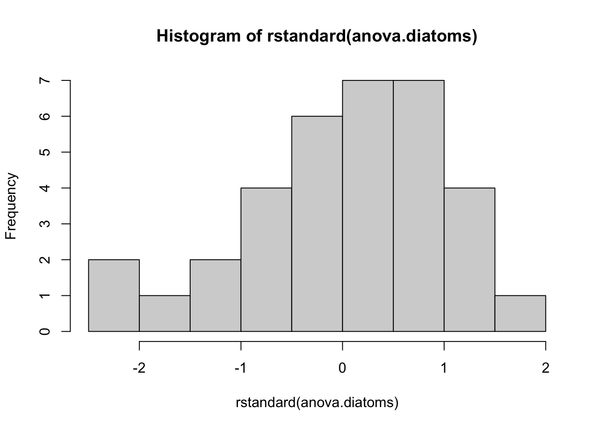

In this week’s lectures we covered how to check the assumptions of ANOVA using residual diagnostics, and how to determine which pairs of treatment means are significantly different using post-hoc tests. A solid understanding of these concepts is essential for conducting robust statistical analyses in R and before we move to more complex models in future weeks.
TipKey learning outcomes
Understand and apply components of the experimental design workflow.
Assess whether a fitted ANOVA model meets its statistical assumptions using residuals.
What are residuals?
What are the assumptions of an ANOVA?
What tests and graphical approaches to use to test assumptions?
Identify which pair(s) of treatment means are significantly different.
When to do a post-hoc test
Statistical tests and graphical methods for post-hoc tests
Family-wise error rate and power trade-off.
Data for this tutorial is in the Data4.xlsx file.
1 Experimental Design Workflow
In this tutorial we will work through the experimental design workflow for a one-way ANOVA.
We will assume we have formed a hypothesis, designed an experiment, collected data and entered it into R. In our case we have chosen an ANOVA for our model and now need to do an assessment of model assumptions.
2 Assessing ANOVA Assumptions Using Residuals
First we need to understand a few key concepts.
2.1 What are residuals?
ImportantResiduals
Residuals are the differences between the observed values and the values predicted by our statistical model. In the context of ANOVA, residuals help us assess how well our model fits the data.
Mathematically, the residual for each observation can be calculated as:
Residuals have key advantages over raw data for testing assumptions and you will be required to use the residuals of your model to test the assumptions of ANOVA and regression from now on.
Key advantages of using residuals:
They isolate the unexplained variation in the data after accounting for the effects of the independent variables.
They allow us to assess the assumptions of the model more directly, as they should ideally be randomly distributed if the model is appropriate.
They are the best way to test for assumptions of more complex models where there are multiple factors, which we will introduce in following weeks.
2.2 Exercise 1: Why use residuals?
Important
This exercise illustrates why it is not ideal to test the normality assumption using all of the observations irrespective of the treatments or the size of dataset.
First we will create 2 synthetic datasets which we sample 50 times (n=50) from a normally distributed population. Both underlying populations have the same variation (sd=3) but have a different mean (mean=10, mean=40). We then plot the histograms for each individually, both groups combined and the combined residuals (observation minus group mean).
Show the code
set.seed(123)group1 <-rnorm(n =50, mean =10, sd =3)group2 <-rnorm(n =50, mean =40, sd =3)par(mfrow =c(2, 2))hist(group1, main ="A: Group1", xlab ="")hist(group2, main ="B: Group2", xlab ="")hist(c(group1, group2), main ="C: Group1&2", xlab ="")hist(c(group1 -mean(group1), group2 -mean(group2)), main ="D: Residuals Group1&2", xlab ="")

Show the code
par(mfrow =c(1, 1))
We can see that histogram of each group is normally distributed (A, B), however when we combine the data we have 2 distinct groupings centred on the mean of each group (C). Therefore, if we look at the raw data irrespective of the groups we would not see a normally distributed dataset. This is because the effect of individual treatments (or groups) is different so each observation is perturbed according to the treatment it receives or group it is in. If we examine the residuals (D), the treatment (or group) effects have been removed and we can then test if the data is normal or has constant variance. It requires fitting of a model to the data, in this case a 1-way ANOVA model. This is why we test the assumptions on the residuals. You could look at the distribution of each group separately but then for some experiments the replication is small so it is hard to assess normality, using residuals allows all of the observations to be pooled together.
1.1) Testing assumptions using residuals
Now we will fit a one-way ANOVA model to the data and extract the residuals to test the assumptions of normality and homogeneity of variance.
Show the code
# Create a data framedata <-data.frame(value =c(group1, group2),group =as.factor(rep(c("Group1", "Group2"), each =50)))# Fit a one-way ANOVA modelanova_model <-aov(value ~ group, data = data)# Extract residualsresiduals_anova <-residuals(anova_model)# Plot histogram of residualshist(residuals_anova, main ="Histogram of Residuals", xlab ="Residuals")
We can see that the histogram of the residuals appears to be normally distributed.
Let’s compare this to the histogram of the raw data (also plot C above).
Show the code
# Plot histogram of raw datahist(data$value, main ="Histogram of Raw Data", xlab ="Value")

The histogram of the raw data shows two distinct peaks corresponding to the two groups, indicating that the data is not normally distributed when considering all observations together. This highlights the importance of using residuals to assess normality in the context of ANOVA.
We can also create a Q-Q plot to further assess normality.
Show the code
# Q-Q plot of residualsqqnorm(residuals_anova)qqline(residuals_anova, col ="red")

The Q-Q plot shows that the residuals closely follow the reference line, indicating that they are approximately normally distributed.
ImportantANOVA has several key assumptions:
Independence: The observations are independent of each other.
Normality: The residuals of the model are normally distributed.
Homogeneity of variances: The variances across the different groups are equal.
2.3 Statistical tests and graphical approaches
2.4 Exercise 2: Diatoms in streams
Here we will test the assumptions using residual diagnostics and finding significant differences using plots and Tukey’s test. The data is found in the Diatoms worksheet.

Image credit: B. Caissie, https://diatoms.org/
A researcher is interested in the effect of zinc pollution on the diversity of diatom communities in streams. They set up an experiment with four levels of zinc concentration: background (back), low, medium, and high. After a certain period, they measure the diversity of diatom species in each stream.
2.1) Importing and processing data, then fitting an ANOVA model
anova.diatoms <-aov(Diversity ~ Zinc, data = diatoms)summary(anova.diatoms)
Df Sum Sq Mean Sq F value Pr(>F)
Zinc 3 2.567 0.8555 3.939 0.0176 *
Residuals 30 6.516 0.2172
---
Signif. codes: 0 '***' 0.001 '**' 0.01 '*' 0.05 '.' 0.1 ' ' 1
2.2) Testing assumptions
To test the model assumptions we encourage you to produce 3 figures:
histogram of the residuals;
a QQ plot of the residuals;
plot residuals against fitted values.
It is good practice to base this on the standardised residuals which can be extracted from a model object using the rstandard function. Standardised residuals are \(\sim N(0,1)\), and make it easier to interpret the plots for outliers. Based on the normal distribution 95% of observations fall within ±2 SD’s of the mean or in the case of standardised residuals ±2.
Histogram of standardised residuals:
The figure below presents the histogram of the standardised residuals. The majority of the observations plot as a bell-shaped (normal) distribution. The exception are 2 observations less than -2. Given there are 34 observations this is about 6% of the dataset so acceptable given we expect 95% observations to be in the interval of ~[-2, 2].
Show the code
hist(rstandard(anova.diatoms))

Q-Q plot:
The QQ plot below shows that the observed quantiles match the theoretical quantiles (assuming normality) based on the observations reasonably following the 1:1 line. We can assume the data is normally distributed.
Show the code
qqnorm(rstandard(anova.diatoms))abline(0, 1)
An alternative method for testing normality is to use the Shapiro-Wilk test. This test has the null hypothesis that the data is normally distributed. A p-value > 0.05 indicates we fail to reject the null hypothesis and therefore the data is normally distributed.
Show the code
shapiro.test(rstandard(anova.diatoms))
Shapiro-Wilk normality test
data: rstandard(anova.diatoms)
W = 0.96923, p-value = 0.4405
The p-value is > 0.05 so we can assume the data is normally distributed.
Testing the assumption of constant variance (homoscedasticity)
The plot below shows the standardised residuals plotted against the fitted values (the group means in this case). To test the assumption of constant variance we want to have the same spread of observations for increases in the fitted values. This is the case here. We don’t want to see fanning where the spread of residuals increases or decreases while the fitted values increase.
Alternatively we can use the Bartlett test to test for homogeneity of variance using the residuals. The null hypothesis is that the variances are equal across groups. A p-value > 0.05 indicates we fail to reject the null hypothesis and therefore the variances are equal.
Now that we have tested the assumptions of the ANOVA and found them to be acceptable we can determine which pairs of treatment means are significantly different. We can do this using Tukey’s Honest Significant Difference using the emmeans package.
ImportantWhen to do a post-hoc test?
Post-hoc tests are performed after an ANOVA when there are significant differences among group means. The purpose of post-hoc tests is to identify which specific pairs of group means are significantly different from each other.
Don’t do a post-hoc test if the ANOVA is not significant!
Show the code
library(emmeans)
Welcome to emmeans.
Caution: You lose important information if you filter this package's results.
See '? untidy'
$emmeans
Zinc emmean SE df lower.CL upper.CL
BACK 1.80 0.165 30 1.461 2.13
HIGH 1.28 0.155 30 0.961 1.60
LOW 2.03 0.165 30 1.696 2.37
MED 1.72 0.155 30 1.401 2.04
Confidence level used: 0.95
$contrasts
contrast estimate SE df t.ratio p.value
BACK - HIGH 0.5197 0.226 30 2.295 0.1219
BACK - LOW -0.2350 0.233 30 -1.008 0.7457
BACK - MED 0.0797 0.226 30 0.352 0.9847
HIGH - LOW -0.7547 0.226 30 -3.333 0.0117
HIGH - MED -0.4400 0.220 30 -2.003 0.2096
LOW - MED 0.3147 0.226 30 1.390 0.5153
P value adjustment: tukey method for comparing a family of 4 estimates
The output shows the pairwise comparisons between the different Zinc treatments. The p.value column indicates whether the differences between the means are statistically significant. A p-value less than 0.05 indicates a significant difference between the treatment means.
From the results, we can see that:
The comparison between Zinc High and Zinc low has a p-value of 0.0117, indicating a significant difference in means.
The other comparisons were not significant as their p-values are greater than 0.05.
We can also visualise the results using a plot.
Show the code
plot(tukey.diatoms, comparisons =TRUE)
TipInterpreting the plot
If the confidence intervals do not cross over each other, then that pair significantly differs from each other.
This plot shows the estimated marginal means (EMM) for each Zinc treatment. In the plot function above, we’ve specified comparisons = TRUE. The blue bars are confidence intervals for the EMMs, and the red arrows are for the comparisons among them. If an arrow from one mean overlaps an arrow from another group, the difference is not significant.
Overall, this analysis allows us to identify which Zinc treatments have significantly different effects on diatom diversity in streams.
We will explore this experiment further in the practical.
4 Family-wise Error Rate and Power Trade-off
4.1 Exercise 3: Family-wise error rate
When conducting multiple pairwise comparisons, the family-wise error rate increases. To control the family-wise error rate, post-hoc tests like Tukey’s HSD are used, which adjust the significance levels to account for the number of comparisons being made.
ImportantFamily-wise error rate
The family-wise error rate is the probability of making at least one Type I error (false positive) among all the comparisons.
Tukey’s HSD test is designed to maintain the overall family-wise error rate at a specified level (commonly 0.05) while still providing sufficient power to detect true differences between group means.
However, there is a trade-off between controlling the family-wise error rate and maintaining statistical power. As the number of comparisons increases, the adjustments made by post-hoc tests can lead to a reduction in power, making it more difficult to detect true differences.
Therefore, it is important to carefully consider the number of comparisons being made and choose appropriate post-hoc tests that balance the need for controlling Type I errors with the desire to maintain adequate statistical power.
Let’s look at an example of the trade-off between family-wise error rate and power using simulation.
set.seed(123)n_groups <-5n_per_group <-10n_simulations <-1000alpha <-0.05family_wise_errors <-0for (i in1:n_simulations) { data <-data.frame(value =rnorm(n_groups * n_per_group, mean =0, sd =1),group =as.factor(rep(1:n_groups, each = n_per_group)) ) anova_model <-aov(value ~ group, data = data) tukey_result <-TukeyHSD(anova_model)if (any(tukey_result$group[, "p adj"] < alpha)) { family_wise_errors <- family_wise_errors +1 }}family_wise_error_rate <- family_wise_errors / n_simulationsfamily_wise_error_rate
[1] 0.044
In this simulation, we create 5 groups with 10 observations each, and we run 1000 simulations. We fit a one-way ANOVA model to the data and perform Tukey’s HSD test for pairwise comparisons. We count how many times at least one comparison is significant (p-value < 0.05) across all simulations to estimate the family-wise error rate (~0.04 or 4% error rate).
The resulting family-wise error rate should be close to the nominal level of 0.05, demonstrating that Tukey’s HSD test effectively controls the family-wise error rate while maintaining reasonable power to detect true differences between group means.
If we don’t use a post-hoc test and just do multiple t-tests we can see how the family-wise error rate increases. For example let’s not adjust the p-values for multiple comparisons:
family_wise_errors_no_adjust <-0for (i in1:n_simulations) { data <-data.frame(value =rnorm(n_groups * n_per_group, mean =0, sd =1),group =as.factor(rep(1:n_groups, each = n_per_group)) ) p_values <-c()for (j in1:(n_groups -1)) {for (k in (j +1):n_groups) { t_test_result <-t.test(value ~ group, data =subset(data, group %in%c(j, k))) p_values <-c(p_values, t_test_result$p.value) } }if (any(p_values < alpha)) { family_wise_errors_no_adjust <- family_wise_errors_no_adjust +1 }}family_wise_error_rate_no_adjust <- family_wise_errors_no_adjust / n_simulationsfamily_wise_error_rate_no_adjust
[1] 0.286
In this simulation, we perform multiple t-tests without adjusting the p-values for multiple comparisons. We count how many times at least one comparison is significant (p-value < 0.05) across all simulations to estimate the family-wise error rate.
The resulting family-wise error rate should be significantly higher than the nominal level of 0.05 (i.e. ~0.286 or 29% error rate!), demonstrating that not adjusting for multiple comparisons leads to an increased risk of Type I errors.
This example highlights the importance of using post-hoc tests like Tukey’s HSD to control the family-wise error rate when conducting multiple pairwise comparisons in ANOVA.
TipVisual methods for multiple comparisons
Statistical tests for multiple comparisons can sometimes be difficult to interpret, especially when there are many groups involved. Hence many propose graphical methods as a more powerful way to determine which groups are different, as we saw in the plot above.
4.2 Power trade-off
When conducting multiple comparisons, there is a trade-off between controlling the family-wise error rate and maintaining statistical power. As the number of comparisons increases, the adjustments made by post-hoc tests can lead to a reduction in power, making it more difficult to detect true differences.
ImportantStatistical power
Statistical power is the probability of correctly rejecting the null hypothesis when it is false (i.e., detecting a true effect).
To illustrate this trade-off, we can simulate data with a known effect size and compare the power of Tukey’s HSD test to that of unadjusted t-tests.
set.seed(123)n_groups <-5n_per_group <-10n_simulations <-1000alpha <-0.05true_effect_size <-1power_tukey <-0power_t_test <-0for (i in1:n_simulations) { data <-data.frame(value =c(rnorm(n_per_group, mean =0, sd =1),rnorm(n_per_group, mean = true_effect_size, sd =1),rnorm(n_per_group, mean =0, sd =1),rnorm(n_per_group, mean =0, sd =1),rnorm(n_per_group, mean =0, sd =1)),group =as.factor(rep(1:n_groups, each = n_per_group)) ) anova_model <-aov(value ~ group, data = data) tukey_result <-TukeyHSD(anova_model)if (tukey_result$group["2-1", "p adj"] < alpha) { power_tukey <- power_tukey +1 } t_test_result <-t.test(value ~ group, data =subset(data, group %in%c(1, 2)))if (t_test_result$p.value < alpha) { power_t_test <- power_t_test +1 }}power_tukey_rate <- power_tukey / n_simulationspower_t_test_rate <- power_t_test / n_simulations
# print results:cat("Adjusted for family-rate errors using Tukey's test. Proportion correctly detected:", power_tukey_rate, "\n")
Adjusted for family-rate errors using Tukey's test. Proportion correctly detected: 0.299
In this simulation, we create 5 groups with 10 observations each, where one group has a true effect size of 1. We run 1000 simulations and fit a one-way ANOVA model to the data. We then perform Tukey’s HSD test and unadjusted t-tests to compare the power of each method in detecting the true effect.
The resulting power rates indicate the proportion of simulations in which each method correctly detected the true effect. We expect the power of the unadjusted t-tests to be higher (~57%) than that of Tukey’s HSD test (~30%), demonstrating the trade-off between controlling the family-wise error rate and maintaining statistical power.
5 Summary
In this tutorial, we covered the following key concepts:
The importance of using residuals to assess the assumptions of ANOVA.
How to test the assumptions of normality and homogeneity of variances using graphical methods and statistical tests.
When to perform post-hoc tests and how to interpret the results of Tukey’s test.
The trade-off between controlling the family-wise error rate and maintaining statistical power when conducting multiple comparisons.
By understanding and applying these concepts, you will be better equipped to conduct robust experimental design and statistical analyses in R and interpret the results accurately.
5.1 Example exam questions
Explain why residuals are used to assess the assumptions of ANOVA instead of the raw data. Provide an example to illustrate your explanation.
Describe the assumptions of ANOVA and outline the graphical and statistical methods used to test these assumptions using residuals.
A researcher conducts a one-way ANOVA and finds a significant effect of treatment on a response variable. Explain when and why post-hoc tests are necessary, and describe how to interpret the results of Tukey’s Honest Significant Difference (HSD) test.
Discuss the trade-off between controlling the family-wise error rate and maintaining statistical power when conducting multiple comparisons. Provide an example to illustrate this trade-off.